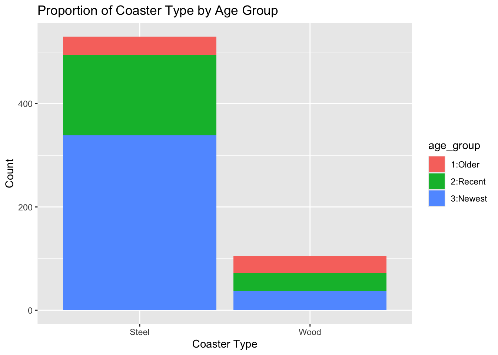
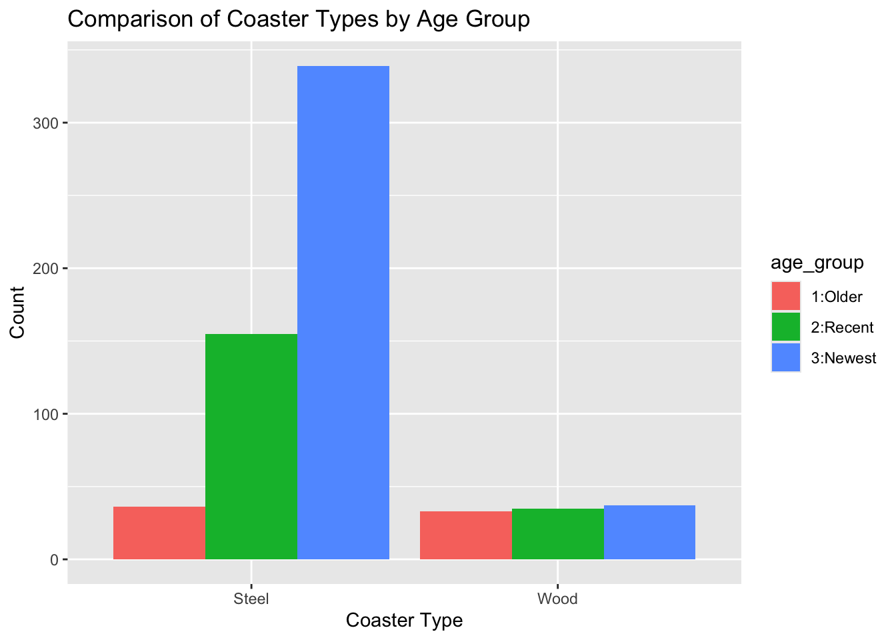
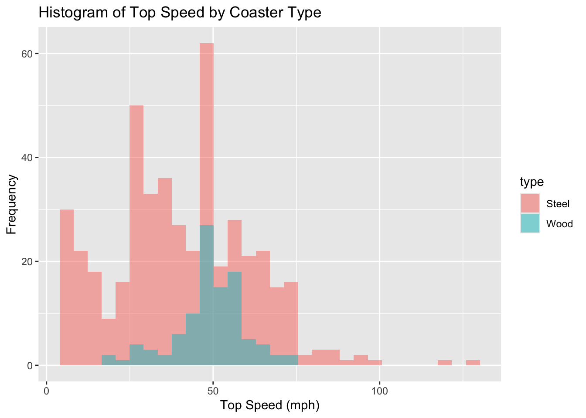
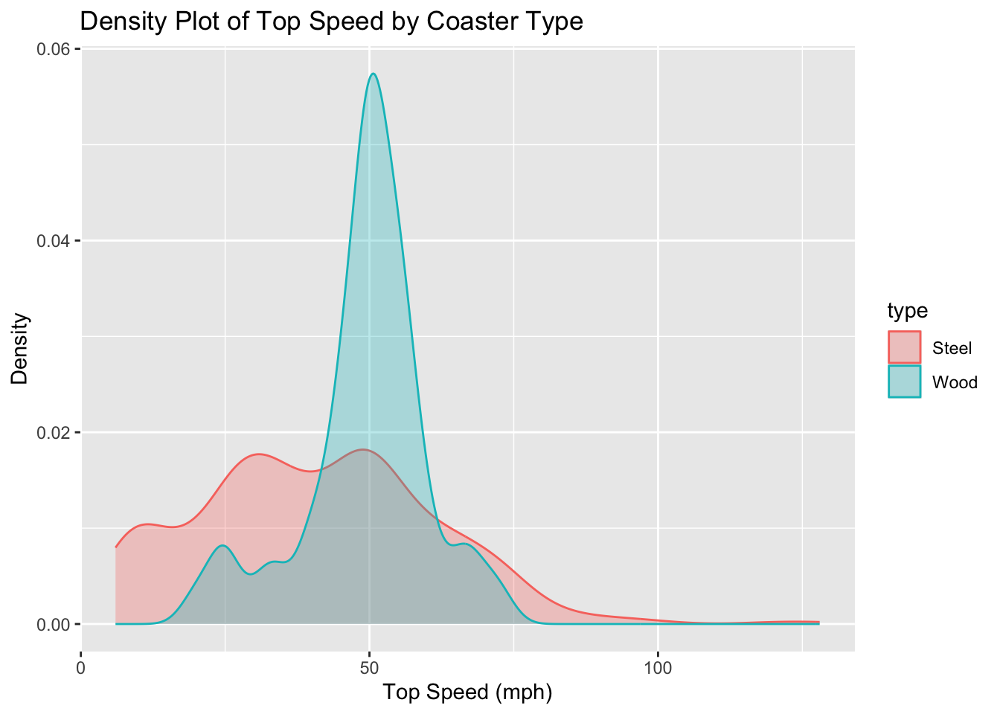
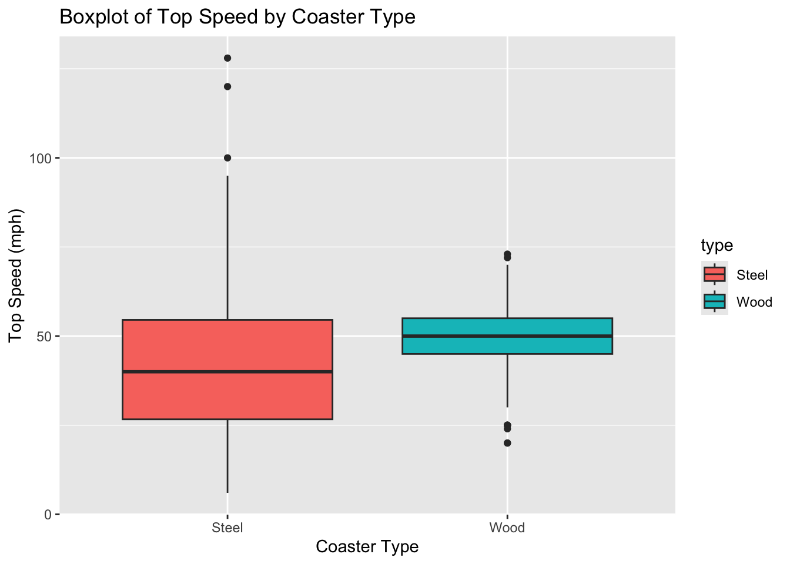
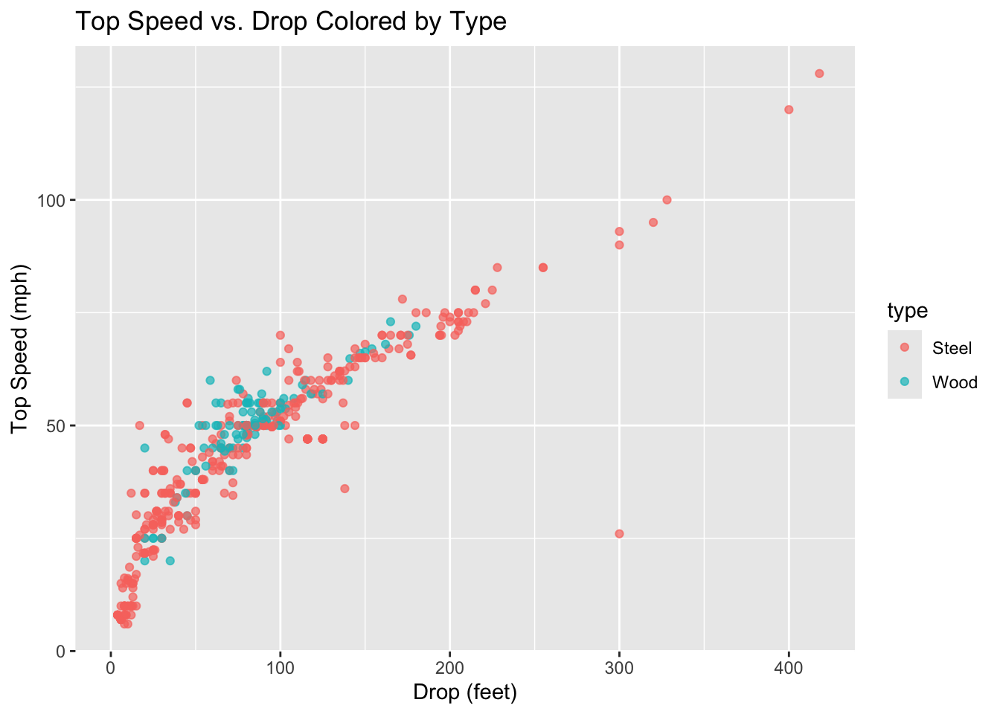
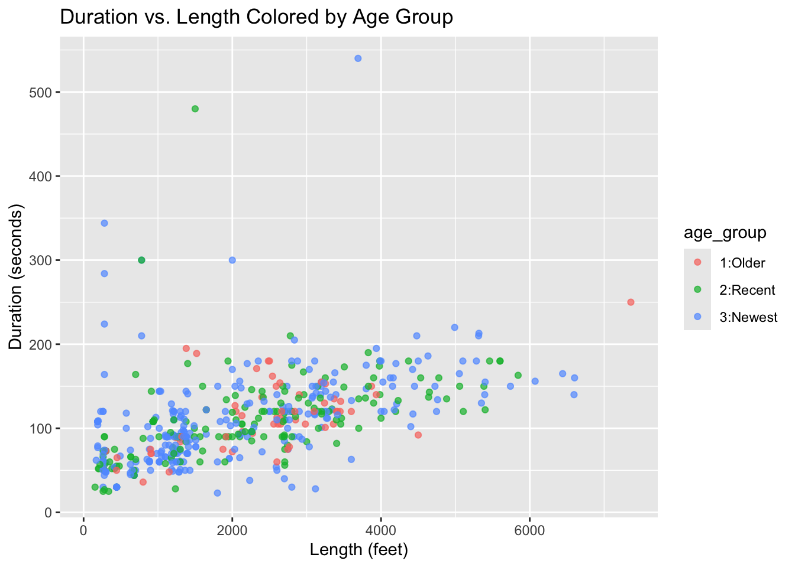
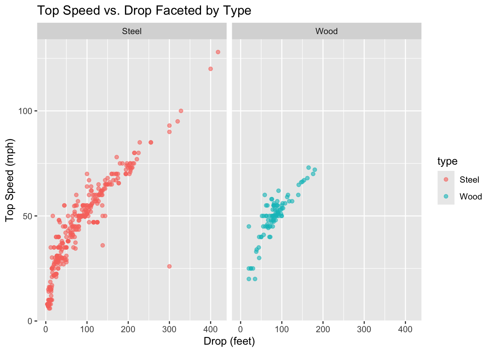
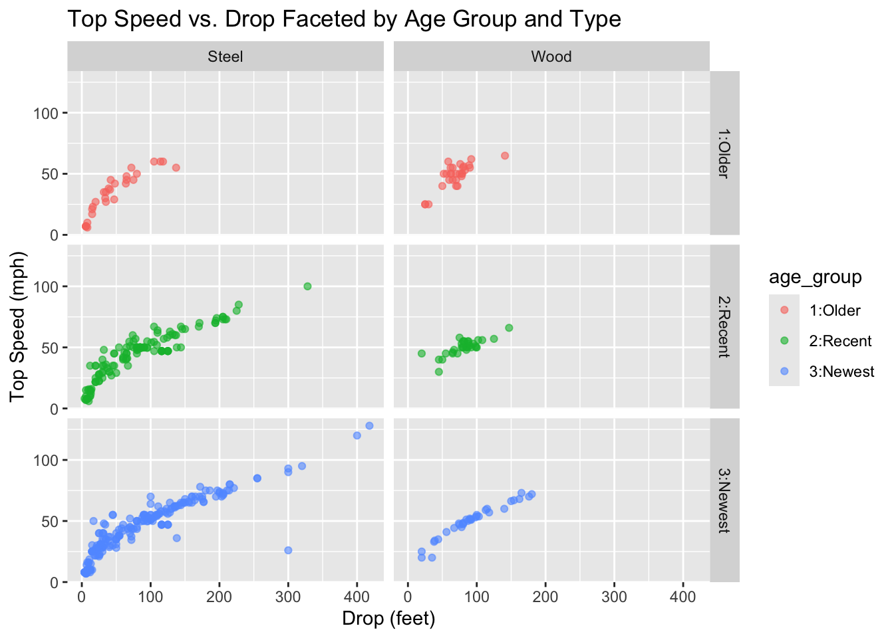

Task 1 - Querying an API and a Tidy-Style Function
Connect to the news API website at newsapi.org. After getting the API key, using the httr package return information about Iran within the last 30 days. I chose 5/25/2026 as this day would work even after the assignment is due.
── Attaching core tidyverse packages ──────────────────────── tidyverse 2.0.0 ──
✔ dplyr 1.1.4 ✔ readr 2.1.5
✔ forcats 1.0.1 ✔ stringr 1.5.1
✔ ggplot2 4.0.1 ✔ tibble 3.3.0
✔ lubridate 1.9.4 ✔ tidyr 1.3.1
✔ purrr 1.1.0
── Conflicts ────────────────────────────────────────── tidyverse_conflicts() ──
✖ dplyr::filter() masks stats::filter()
✖ dplyr::lag() masks stats::lag()
ℹ Use the conflicted package (<http://conflicted.r-lib.org/>) to force all conflicts to become errors
library(jsonlite)
Attaching package: 'jsonlite'
The following object is masked from 'package:purrr':
flatten
# Use GET() from the httr package to return information about 'Iran' from the last 30 days.news <-GET("https://newsapi.org/v2/everything?q=Iran&from=2026-05-25&language=en&pageSize=50&apiKey=3bccd48e62cc47959a971ae2146ee001")news
# Parsing the Data# Parse what is returned and find your way to the data frame that has the actual article information in # it (check content). Note the first column should be a list column!# The first column in the resulting articles data frame is a list column containing source details.parsed_data <-fromJSON(rawToChar(news$content))news_df <-as_tibble(parsed_data$articles)# Display the structure to verify the list columnstr(news_df)
tibble [50 × 8] (S3: tbl_df/tbl/data.frame)
$ source :'data.frame': 50 obs. of 2 variables:
..$ id : chr [1:50] NA "wired" NA NA ...
..$ name: chr [1:50] "BBC News" "Wired" "BBC News" "BBC News" ...
$ author : chr [1:50] NA "Katie Drummond" NA NA ...
$ title : chr [1:50] "Iran says it has halted attacks on Israel after first exchange of fire since truce" "The US Can Put People on the Moon. Why Can’t It Get Iranians Online?" "Greek national charged with assisting 'Iran spies'" "Bowen: Trump needs this war to end but Iran is not backing down" ...
$ description: chr [1:50] "Iran launched about 30 missiles at Israel following a strike in Lebanon, while Israel carried out two waves of "| __truncated__ "Jason Rezaian spent years reporting from Iran before being imprisoned by the regime. He says internet access is"| __truncated__ "The Metropolitan Police said the allegations relate to the targeting of a UK-based journalist working for Iran International." "Under pressure from the polls and Gulf allies, the White House is pushing for a deal but Iran wants concessions." ...
$ url : chr [1:50] "https://www.bbc.com/news/articles/cj6ge150z5go" "https://www.wired.com/story/the-big-interview-podcast-jason-rezaian/" "https://www.bbc.com/news/articles/c5yx6lyr53wo" "https://www.bbc.com/news/articles/cedp3lee059o" ...
$ urlToImage : chr [1:50] "https://ichef.bbci.co.uk/news/1024/branded_news/1074/live/ab9547e0-6340-11f1-8e1d-bbbb1017d210.jpg" "https://media.wired.com/photos/6a0f9f970a863d3b9a0af4cc/191:100/w_1280,c_limit/Big-Interview-UV-Jason-Rezaian-B"| __truncated__ "https://ichef.bbci.co.uk/news/1024/branded_news/2581/live/9a9a35c0-5b68-11f1-8ea9-9775e47f19f8.jpg" "https://ichef.bbci.co.uk/news/1024/branded_news/08db/live/a5895d30-5db6-11f1-8b6d-5b89cbb85786.jpg" ...
$ publishedAt: chr [1:50] "2026-06-08T15:12:59Z" "2026-05-26T14:41:54Z" "2026-05-29T15:39:05Z" "2026-06-01T15:25:54Z" ...
$ content : chr [1:50] "At least 3,468 people have been killed in Iran during the war, according to the country's Martyrs Foundation. I"| __truncated__ "What could they do that theyre not doing?\r\nI mean, look, I think the silly idea is to activate and drop a lot"| __truncated__ "\"We know this may cause concern for many people here in the UK, and particularly those working in Persian-lang"| __truncated__ "It has emerged that the Saudis have attacked Iran, they say in retaliation for Iranian attacks. But significant"| __truncated__ ...
# Creating a Tidy-Style Function# write a quick function that allows the user to easily query this API. The inputs to the function # should be the title/subject to search for (string), a time period to search from (string - you’ll search # from that time until the present), and an API key.get_news_data <-function(subject, start_date ="2026-05-25", api_key ="3bccd48e62cc47959a971ae2146ee001") { url <-paste0("https://newsapi.org/v2/everything?q=", subject, "&from=", start_date, "&language=en&pageSize=50&apiKey=", api_key) req <-GET(url) parsed <-fromJSON(rawToChar(req$content))return(as_tibble(parsed$articles))}# Demonstrating the function twice to show it works.# let us query on the NBA NBA_news <-get_news_data("NBA", "2026-06-05")# let us query on hockeyhockey_news <-get_news_data("hockey", "2026-06-08")head(NBA_news)
# A tibble: 6 × 8
source$id $name author title description url urlToImage publishedAt content
<chr> <chr> <chr> <chr> <chr> <chr> <chr> <chr> <chr>
1 the-verge The … Terre… 82-0… 82-0 marri… http… https://p… 2026-06-06… "<ul><…
2 <NA> BBC … <NA> Five… The city i… http… https://i… 2026-06-08… "One p…
3 <NA> BBC … <NA> Elmo… The Sesame… http… https://i… 2026-06-06… "In 20…
4 <NA> BBC … <NA> Knic… A star-stu… http… https://i… 2026-06-11… "New Y…
5 business-… Busi… insid… Wher… The New Yo… http… https://i… 2026-06-05… "The b…
6 business-… Busi… insid… Wher… The NBA Fi… http… https://i… 2026-06-13… "The N…
head(hockey_news)
# A tibble: 6 × 8
source$id $name author title description url urlToImage publishedAt content
<chr> <chr> <chr> <chr> <chr> <chr> <chr> <chr> <chr>
1 <NA> NPR The A… Cana… The World … http… https://n… 2026-06-12… "TORON…
2 <NA> The A… Sophi… Nice… The Amazon… http… https://c… 2026-06-10… "Like …
3 <NA> BBC N… Eliza… Haal… Erling Haa… http… https://i… 2026-06-12… "Erlin…
4 <NA> CNET Gael … Toda… Here's tod… http… https://w… 2026-06-10… "Looki…
5 <NA> Rolli… Chari… ‘Off… The 'Off C… http… https://w… 2026-06-12… "The w…
6 <NA> Howsw… Jessi… A We… We had ano… http… https://w… 2026-06-14… "We ha…
Task 2 - Summarizing Roller Coaster Data
Using data about roller coasters. The data is about different aspects of roller coasters.
# Convert the columns census_region, age_group, scale, type and design to factors and convert inversions to logi. roller_coaster <- roller_coaster |>mutate(across(c(census_region, age_group, scale, type, design), as.factor), inversions = inversions =="Yes")#Understand how your data is stored and check the structurestr(roller_coaster)
# Determine the rate of missing valuessum_na <-function(column){sum(is.na(column))}na_counts <- roller_coaster |>summarize(across(everything(), sum_na))print(na_counts)
# A tibble: 1 × 21
coaster park city state census_region year_opened age_group top_speed
<int> <int> <int> <int> <int> <int> <int> <int>
1 0 0 0 0 0 0 0 74
# ℹ 13 more variables: max_height <int>, scale <int>, type <int>, design <int>,
# drop <int>, length <int>, duration <int>, inversions <int>,
# number_of_inversions <int>, make <int>, latitude <int>, longitude <int>,
# boundary <int>
Looking at the output from str() we can see our data structure is a tibble with 635 observations and 21 variables. There were 9 numerical variables and of those 9, 5 of the variables had missing variables. The categorical and logical variables had no missing variables. top_speed had 74 missing values, max_height had 8 missing values, drop had 128 missing values, length had 33 missing values, and duration had 66 missing values.
In this next section we are creating a one-way contigency table, two-way contingency table, and three-way contigency table for some of the factor variables that we created above. We will be using the table() function to accomplish this.
One-Way Table: There are more steel coasters than wood coasters in the dataset. Two-Way Table: The wood coasters has even distribution among the age_groups in the dataset compared to the steel coasters which is skewed towards recent/new. Three-Way Table: The midwest region has the most coasters both steel and wood. Might be due to the number of parks in the midwest?
#In this next part, we will be creating a conditional two-way table using table(). Condition on one variable's setting and create a two-way table. # Conditional Two-Way Table: Method 1 (Filtering without using 'with')midwest_coasters <- roller_coaster |>filter(census_region =="Midwest")cond_tab1 <-table(midwest_coasters$type, midwest_coasters$age_group)print(cond_tab1)
# Stacked Bar Graph ggplot(roller_coaster, aes(x = type, fill = age_group)) +geom_bar(position ="stack") +labs(title ="Proportion of Coaster Type by Age Group", x ="Coaster Type", y ="Count")

# Side-by-Side Bar Graph ggplot(roller_coaster, aes(x = type, fill = age_group)) +geom_bar(position ="dodge") +labs(title ="Comparison of Coaster Types by Age Group", x ="Coaster Type", y ="Count")

Conditional Two-Way Tables Discussion: By conditioning on the census_region variable, these tables isolate only the roller coasters located in the Midwest. Looking at the output, the highest concentration of coasters in this region are Steel coasters in the 3:Newest age group, with exactly 58 coasters.
Dplyr Two-Way Table Discussion: Unlike the conditional tables, our dplyr pivot table looks at the entire country. We can see that nationwide, the 2:Recent era saw a massive boom in construction, peaking at 155 Steel coasters and 35 Wooden coasters. If we compare the recent steel coasters to our conditional table, we can see that 45 out of those 190 recent steel coasters (about 24%) reside in the Midwest!
Bar Graphs Discussion: The bar graphs provide a visual representation of the relationship between coaster type and age_group across the entire dataset. The stacked bar graph clearly illustrates that Steel coasters outnumbers Wood coasters overall.
The side-by-side bar graph is good because it makes it easy to compare the absolute raw counts of the age groups directly against each other within their types. For instance, it clearly highlights the “2:Recent” boom for steel coasters. However, it also visually emphasizes that older coasters make up a much larger relative proportion of all surviving wooden coasters.
Numeric variables (and across groups)
# Center and spread for two numeric variables roller_coaster |>summarize(Mean_Speed =mean(top_speed, na.rm =TRUE),SD_Speed =sd(top_speed, na.rm =TRUE),Mean_Height =mean(max_height, na.rm =TRUE),SD_Height =sd(max_height, na.rm =TRUE) )
# Histogram ggplot(roller_coaster, aes(x = top_speed, fill = type)) +geom_histogram(alpha =0.5, position ="identity", bins =30) +labs(title ="Histogram of Top Speed by Coaster Type", x ="Top Speed (mph)", y ="Frequency")
Warning: Removed 74 rows containing non-finite outside the scale range
(`stat_bin()`).

# Kernel Density Plot ggplot(roller_coaster, aes(x = top_speed, color = type, fill = type)) +geom_density(alpha =0.3) +labs(title ="Density Plot of Top Speed by Coaster Type", x ="Top Speed (mph)", y ="Density")
Warning: Removed 74 rows containing non-finite outside the scale range
(`stat_density()`).

# Boxplot ggplot(roller_coaster, aes(x = type, y = top_speed, fill = type)) +geom_boxplot() +labs(title ="Boxplot of Top Speed by Coaster Type", x ="Coaster Type", y ="Top Speed (mph)")
Warning: Removed 74 rows containing non-finite outside the scale range
(`stat_boxplot()`).

# Scatterplot 1: Colored by a categorical variable ggplot(roller_coaster, aes(x = drop, y = top_speed, color = type)) +geom_point(alpha =0.7) +labs(title ="Top Speed vs. Drop Colored by Type", x ="Drop (feet)", y ="Top Speed (mph)")
Warning: Removed 162 rows containing missing values or values outside the scale range
(`geom_point()`).

# Scatterplot 2: Colored by a different categorical variable ggplot(roller_coaster, aes(x = length, y = duration, color = age_group)) +geom_point(alpha =0.7) +labs(title ="Duration vs. Length Colored by Age Group", x ="Length (feet)", y ="Duration (seconds)")
Warning: Removed 97 rows containing missing values or values outside the scale range
(`geom_point()`).

# Scatterplot faceted by one categorical variableggplot(roller_coaster, aes(x = drop, y = top_speed, color = type)) +geom_point(alpha =0.6) +facet_wrap(~ type) +labs(title ="Top Speed vs. Drop Faceted by Type", x ="Drop (feet)", y ="Top Speed (mph)")
Warning: Removed 162 rows containing missing values or values outside the scale range
(`geom_point()`).

# Scatterplot faceted by a combination of two categorical variablesggplot(roller_coaster, aes(x = drop, y = top_speed, color = age_group)) +geom_point(alpha =0.6) +facet_grid(age_group ~ type) +labs(title ="Top Speed vs. Drop Faceted by Age Group and Type", x ="Drop (feet)", y ="Top Speed (mph)")
Warning: Removed 162 rows containing missing values or values outside the scale range
(`geom_point()`).

Discussion of Numeric Summaries: Evaluating the overall center and spread, the average top speed of a US roller coaster is 42.24 mph with a standard deviation of 19.37 mph, while the average maximum height is 76.8 feet (with a large spread of 61.51feet).
When we subset the data to look exclusively at Steel coasters, we find that both the mean speed (40.69 mph) and mean height (75.77 feet) are lower than the dataset as a whole. This is further clarified when grouping across the single variable type; Steel coasters possess lower averages and significantly greater standard deviations than Wood coasters (which average 49.33 mph and 81.96 feet in height with a much smaller spread). This shows that steel technology allows for smaller, slower, and more varied designs.
For both steel and wooden coasters, the maximum height and top speed have notably increased as we move from 1:Older to 2:Recent confirming that modern roller coaster engineering consistently pushes boundaries. From 2:Recent to 3:Newest for wood coasters the mean_height increases whereas speed stays relatively the same. For steel coasters, the mean_speed lowers and the mean_height also decreases which is interesting.
The correlation matrix allows us to examine the linear relationship between all numeric variables simultaneously. The most prominent finding is the exceptionally strong positive correlation between top_speed, max_height, and drop. For instance, drop and max_height have a correlation of 0.959, and drop and top_speed sit at 0.911.
Discussion of Distribution Plots: By overlaying the distributions of top_speed across coaster type without faceting, we can directly compare the profiles of Steel and Wood coasters.
The kernel density plot and histogram reveal that the distribution for wooden coasters is relatively symmetric and tightly clustered around the 50 mph mark. In contrast, steel coasters exhibit a much wider distribution with a long tail extending rightward toward extremely high speeds.
The boxplot highlights this long tail seen in steel coasters. While the median speeds aren’t drastically far apart, the steel boxplot shows multiple extreme upper outliers stretching past 100 mph, representing the very fast and big coasters that achieve speeds completely unattainable by traditional wooden roller coasters.
Discussion of Scatterplots: Our first scatterplot showcases a tight, positive linear relationship between drop and top_speed. Coloring the points by type shows a distinct separation: wooden coasters are clustered tightly at the lower left (shorter drops, slower speeds), while steel coasters dominate the upper right, accounting for almost all drops over 150 feet. The second scatterplot shows that track length and duration also have a positive trend, and coloring by age_group illustrates that older coasters tend to be clustered closer to the bottom left compared to modern ones.
Discussion of Faceted Scatterplots: Looking at the scatterplot relating top_speed and drop faceted by type, the separation in engineering limits shows through. While both materials show the exact same strong positive linear relationship, the Wood facet abruptly truncates around a 150-foot drop and 75 mph. The Steel facet continues stretching far into the upper right corner, visually proving that steel support structures are required to achieve extreme heights and speeds.
Finally, the scatterplot faceted by both age_group and type provides a historical timeline of roller coaster engineering. In the 1:Older panel, steel and wood coasters had very similar performance profiles tightly clustered in the bottom left. As we look across to the 2:Recent and 3:Newest panels, the Steel category moves outward with extreme upper-right outliers. This illustrates the modern coaster technology where recent advancements in steel engineering have pushed drop heights and top speeds to levels unimaginable in the older coasters!